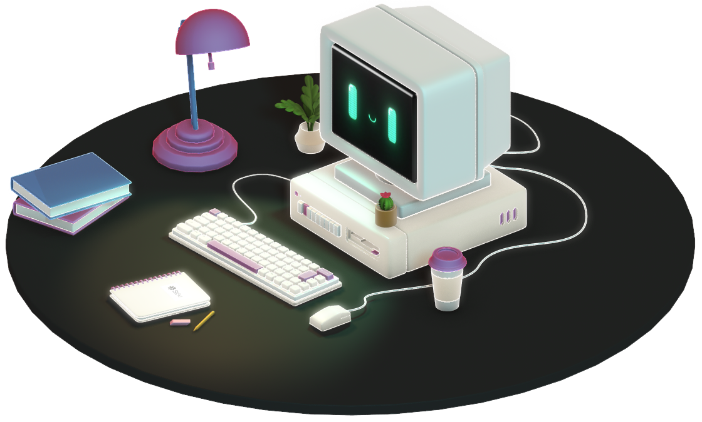

NeuroLink -
Un lien direct
entre les esprits
Échange des idées à la vitesse de la lumière, dans un espace
où les humains et la technologie ne font qu'un. Bienvenue
dans l'air de la connexion absolue.
